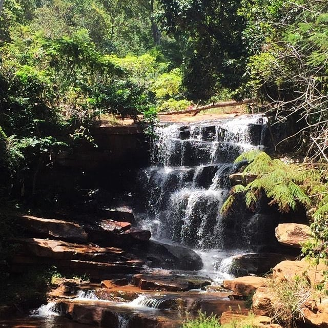
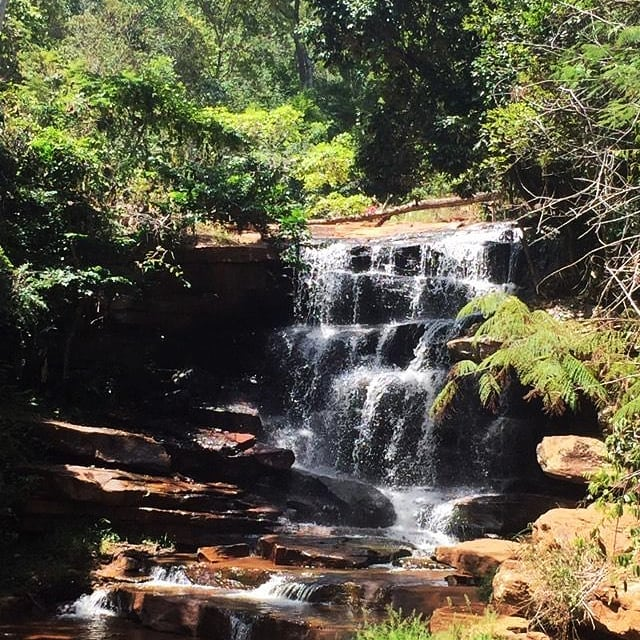

Partes pra trrismo
Em algumas coisas locais no botafogo, a cachoeira da cacique fica localizado a 8/KM do Botafogo, um rio onde se estende por boa parte do território do Bonito-Bahia
Cachoeira cacique

Em algumas coisas locais no botafogo, a cachoeira da cacique fica localizado a 8/KM do Botafogo, um rio onde se estende por boa parte do território do Bonito-Bahia
Cachoeira cacique